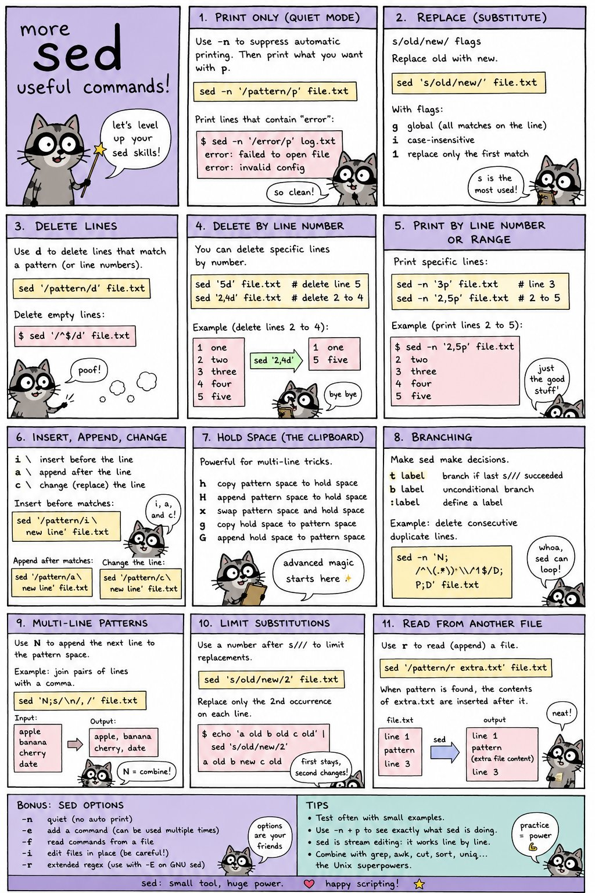
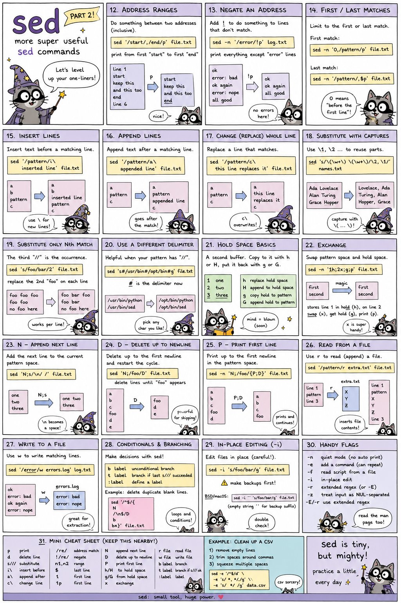

Hand-drawn field notes on ffmpeg, gstreamer, sed, and awk. Free to read, blue by design.
est. 2026 · all blue, all the time
← Back to the library
Zine · Two Parts
sed: Useful Commands
Level up your one-liners. Printing, substitution, deleting lines, hold space, branching, and a full cheat sheet.

Part 1 — the basics

Part 2 — more super useful commands